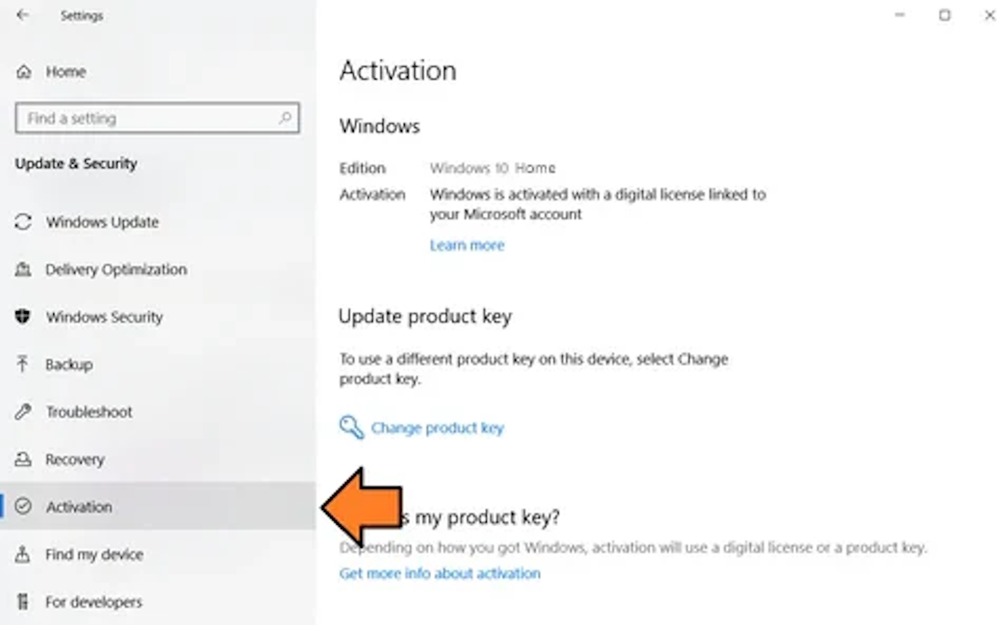
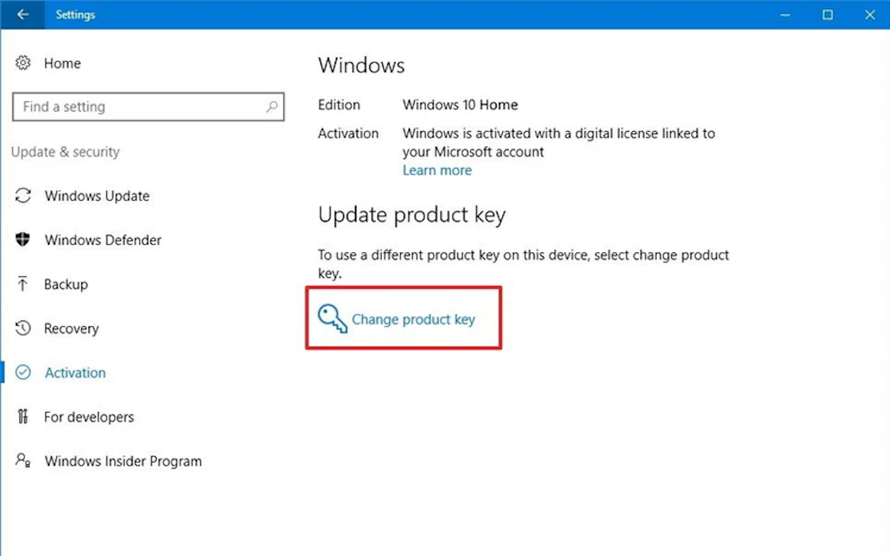
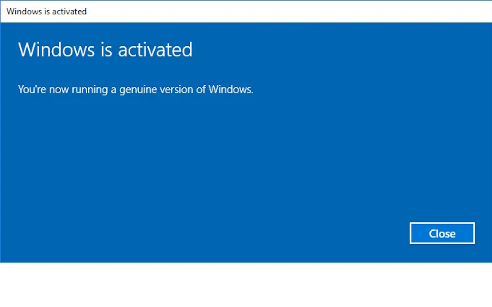

1. Faceți clic pe Start, mergeți la Setări

2. Selectați Actualizare și Securitate

3. Faceți clic pe fila Activare situată în partea stângă
4. Faceți clic pe Activare sau Schimbare cheie de produs
5. Introduceți cheia de licență pe care ați primit-o după achiziție

6. Gata, acum Windows-ul dvs. este complet activat și veți avea acces la funcțiile Premium.
